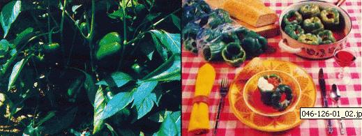

It's pepper-picking time again already . . . which means that over the next four to eight weeks you may-at times-find yourself with more crisp, juicy green peppers on your hands than you know what to do with. Well, here are a couple of suggestions that should help you dispose of that bumper crop.
In case you didn't know it (I didn't, until recently), peppers can be frozen. No blanching is needed . . . all you have to do is [1] slice the upper fourth of each fruit off, [2] remove the peppers' ribs and seeds, [3] place the gutted peppers-along with their tops-inside heavy plastic bags, then [4] expel the air from the bags, seal 'em up tight, and pop them into the freezer. Six months later (when supermarket pepper prices have gone through the roof) you'll have a supply of good-tasting, inexpensive gardengrown peppers as close as your freezer!
OK. That's one way to deal with a surplus of green peppers. Another is to use them in the following recipe.
What's unique about this stuffed pepper recipe (which came to me-via a friend-from Yugoslavia) is that all the cooking is done over a burner. There's no baking involved . . . which means you can forget about using the oven-and heating up the entire house-on an already-scorching-hot summer afternoon.
8 green peppers
2/3 cup of uncooked rice
2 tablespoons of cooking oil
1 small onion, diced
garlic to taste (optional)
1 pound of lean ground beef
1 six-ounce can of tomato paste
3 cups of water
salt and pepper
Cut the tops off the peppers (set the tops aside), dispose of the peppers' ribs and seeds, and set the cleaned fruits upright in a fairly deep saucepan.
Next, heat the rice in the cooking oil in a frying pan, and-when the rice begins to turn brown-add the onion. (You can-if you want-toss in a bit of garlic, too.) When both the rice and the onion have browned, add the ground beef to the pan, break the meat into small chunks, and cook until brown. Then stuff the peppers about half full with the rice-onion-beef mixture.
All right. Now empty the can of tomato paste into a clean frying pan and brown the lump of paste. (Swish the tomato solids around until they've visibly darkened.) Add three cups of water to the pan, stir to dissolve the browned paste, and salt and pepper to taste.
Finally, pour the tomato sauce into and around each of the stuffed peppers so that the bulging fruits are both filled with and standing in liquid. Put the tops back on the peppers, cover the saucepan tightly, and cook over low heat until the rice is done (30 to 45 minutes). That's it! You've just created a hearty (yet economical) meal for four!
I like to set each pepper in a soup dish, ladle some tomato sauce over the meat-packed fruit, and top the whole thing off with a good-sized gob of yogurt or sour cream. If you have other serving ideas, however, by all means go ahead and experiment!
Once you discover how easy it is to freeze them for future use-or how delectable they can be when stuffed according to the above recipe-you just may wish that bumper crop of green peppers had been even bigger yet!
|
 |
|
|